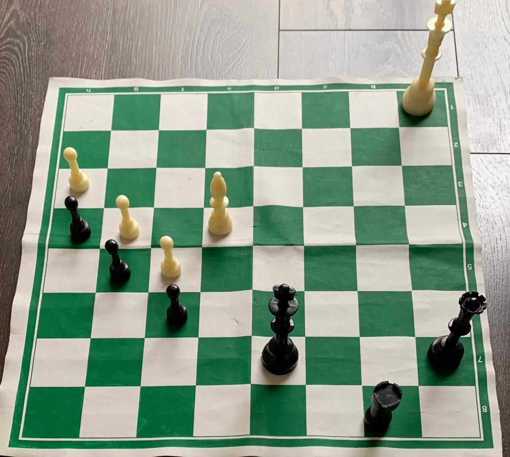

Chess is a strategic indoor game which is played between two players, and which is well known by many.
Each player has 16 pieces, 8 pawns, 2 rooks, 2 bishops, 2 knights, one queen and a king. Each moves differently, the rook moves straight and side to side, the pawns move straight, the knight moves in a L shape, the bishops move diagonally, the queen can move straight side to side and diagonally and the king can move any direction but can only move one space.
Chess originated in northern India in the 6th century as Chaturanga. It spread to Persia and the Islamic world as Shatranj. It evolved in Europe during the Middle Ages and had its first recorded tournament in London in 1851. The FIDE, the governing body, was founded in 1924.
Some tactics of this game are:
A pin is where a piece is immobilized to protect a more valuable piece behind it, restricting the opponent's piece and creating opportunities for exploitation or material gain.
A fork is where one piece attacks multiple opponent's pieces simultaneously, creating pressure and often leading to material gain or positional advantage.
Zugzwang is a chess situation where a player is forced to make a move that weakens their position.
Skewer is where a valuable piece is attacked and forced to move, revealing a less valuable piece. Pin is a tactic where a piece is immobilized to protect a more valuable piece
.
All that matters on the chessboard is good moves. – Bobby Fischer